Tema CS4: Sucesiones y recursión
(Ejercicios resueltos)
1 Formas de generar una sucesión
Ejercicio 1.1. Definir la sucesión u[n] cuyo término general es
1-(-1/2)^n.
(%i1)
u[n]:=1-(-1/2)^n ;
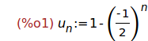
Ejercicio 1.2. Calcular el término que ocupa la posición 20 de la sucesión
anterior.
(%i2)
u[20] ;
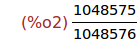
Ejercicio 1.3. Calcular el valor decimal del término anterior.
(%i3)
float(%);
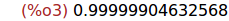
Ejercicio 1.4. Calcular el límite de la sucesión u[n].
(%i4)
limit(u[n],n,inf);
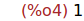
Ejercicio 1.5. Definir, por recursión, la sucesión
v[n] = 1, si n = 0
= v[n-1]/2+3, si n > 0.
(%i5)
v[0] : 1$
v[n] := v[n-1]/2+3$
Ejercicio 1.6. Calcular la lista de pares [k,v[k]] para k entre 0 y 9.
(%i7)
makelist([k,v[k]],k,0,9);
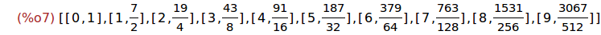
Ejercicio 1.6. Asignarle a la variable terminos como valor la lista de
pares [k,v'[k]] para k entre 0 y 5, donde v'[k] es la expresión decimal
de v[k].
(%i8)
terminos : makelist([k,float(v[k])],k,0,9);
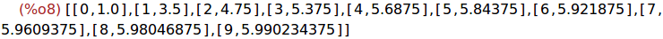
Ejercicio 1.7. Dibujar los puntos de la lista terminos.
(%i9)
wxplot2d([discrete,terminos], [style, points],[xlabel,"n"],[ylabel,"v[n]"]);
Ejercicio 1.8. Calcular la lista de pares [k,v'[k]] para k entre 100 y 105,
donde v'[k] es la expresión decimal de v[k].
(%i10)
makelist([k,float(v[k])],k,100,105);
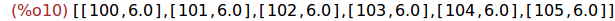
Ejercicio 1.9. Calcular el límite de la sucesión v.
(%i11)
limit(v[n],n,inf);

Nota. Maxima no calcula el límite de esta sucesión.
2 Recurrencias
Ejercicio 2.1. Cargar el paquete solve_rec para resolver recurrencias.
(%i12) load(solve_rec)$
Ejercicio 2.2. Resolver la ecuación recurrente w[n]=w[n-1]/2+3
(%i13)
solve_rec(w[n]=w[n-1]/2+3,w[n]);
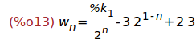
(%i14)
ratsimp(%);
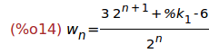
Ejercicio 2.2. Resolver la ecuación recurrente w[n]=w[n-1]/2+3 con la
condición inicial w[0]=1
(%i15)
solve_rec(w[n]=w[n-1]/2+3,w[n],w[0]=1);
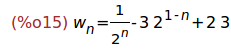
(%i16)
ratsimp(%);
Ejercicio 2.3. Calcular w[2]
(%i17)
w[2];
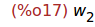
Ejercicio 2.4. Definir la sucesión w[n] como la solución de
w[n]=w[n-1]/2+3
w[0]=1
(%i18)
ratsimp(solve_rec(w[n]=w[n-1]/2+3,w[n],w[0]=1));
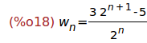
(%i19)
define(w[n],rhs(%));
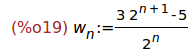
Ejercicio 2.5. Calcular w[2].
(%i20)
w[2];
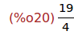
Ejercicio 2.6. Calcular el desarrollo de w[n].
(%i21)
expand(w[n]);
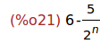
Ejercicio 2.7. Borra el valor de la variable u.
(%i22) kill(u)$
Ejercicio 2.8. Resolver las ecuaciones que definen la sucesión de Fibonacci
u[0] =0,
u[1] =1,
u[n+2]=u[n+1]+u[n]
(%i23)
solve_rec(u[n+2]=u[n+1]+u[n],u[n],u[0]=0,u[1]=1);
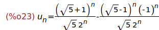
Ejercicio 2.9. Definir la sucesión uC como la forma cerrada de la
sucesión de Fibonacci.
(%i24)
define(uC[n],rhs(%));
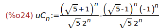
Ejercicio 2.10. Calcular el décimo término de la sucesión de Fibonacci
usando su forma cerrada.
(%i25)
uC[10];
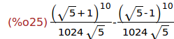
(%i26)
ratsimp(%);
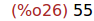
3 Representación gráfica de uns sucesión
Ejercicio 3.1. Asignarle a la variable puntos la lista de los puntos
correspondientes a los 9 primeros puntos de la sucesión de Fibonacci
calculados con la forma cerrada.
(%i27)
puntos : makelist([k,ratsimp(uC[k])],k,0,8);
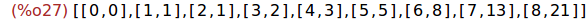
Ejercicio 3.2. Representar gráficamente los puntos correspondientes a los
9 primeros puntos de la sucesión de Fibonacci calculados con la forma
cerrada.
(%i28)
wxplot2d([discrete,puntos],[x,0,9],[style,points]);

4 Sucesiones definidas por sumatorios
Ejercicio 4.1. Calcular la suma de los cuadrados de los n primeros números
(%i29)
sum(k^2,k,1,n);
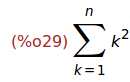
Ejercicio 4.2. Cargar el paquete simplify_sum.
(%i30)
load(simplify_sum) $
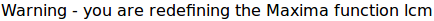
Ejercicio 4.3. Calcular la suma de los cuadrados de los n primeros números
(%i31)
'sum(k^2,k,1,n)=simplify_sum(sum(k^2,k,1,n));
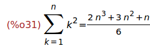
Ejercicio 4.4. Descomponer en factores la suma anterior.
(%i32)
factor(%);
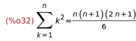
Ejercicio 4.5. Calcular la suma de la serie de término 1/k^2.
(%i33)
'limit(sum(1/k^2,k,1,n),n,inf) = simplify_sum(sum(1/k^2,k,1,inf));
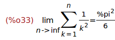
Ejercicio 4.6. Calcular la suma de 1 a n de k*binomial(n,k).
(%i34)
'sum(k*binomial(n,k),k,1,n) = simplify_sum(sum(k*binomial(n,k),k,1,n));
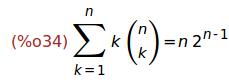
5 Productos y factoriales
Ejercicio 5.1. Calcular el producto de los cuadrados de los 5 primeros
números.
(%i35)
product(k^2,k,1,5);
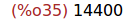
Ejercicio 5.2. Definir la sucesión q[n] cuyo término n-ésimo es
binomial(2*n,n)/4^n
(%i36)
q[n] := binomial(2*n,n)/4^n;
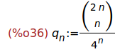
Ejercicio 5.2. Expresar q[n] mediante factoriales.
(%i37)
makefact(q[n]);
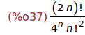
Ejercicio 5.2. Expresar q[n+1]/q[n] mediante factoriales.
(%i38)
q[n+1]/q[n];
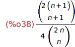
(%i39)
makefact(%);
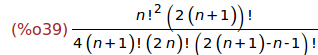
Ejercicio 5.3. Simplificar los factoriales de la expresión anterior.
(%i40)
minfactorial(%);
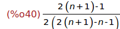
Ejercicio 5.4. Simplificar la expresión anterior.
(%i41)
ratsimp(%);

6 Sucesiones del tipo u[n+1]=f(u[n])
Ejecicio 6.1. Definir la función f como la función coseno.
(%i42)
f(x):=cos(x);
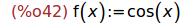
Ejercicio 6.2. Redefinir la sucesión u por recurrencia:
u[n] = 1.5, si n=0
= f(u[n-1]), si n>0
(%i43)
kill(u)$
u[0] : 1.5$
u[n] := f(u[n-1])$
Ejercicio 6.3. Definir la lista L1 de los puntos (u[k],u[k+1]) y la lista
L2 de los puntos (u[k+1],u[k+1]) para k entre 0 y 10.
(%i46)
L1:makelist([u[k],u[k+1]],k,0,10)$
L2:makelist([u[k+1],u[k+1]],k,0,10)$
Ejercicio 6.4. Definir L como la lista obtenida intercalando los puntos de
L1 y L2; es decir, L es [L1[1],L2[1],L1[2],L2[2],L1[3],L2[3],...]
(%i48) L : join(L1,L2)$
Ejercicio 6.5. Dibujar, sobre una misma gráfica, la función f, la función
y=x y los puntos de la lista L.
(%i49)
wxplot2d([f(x),x,[discrete,L]], [x,0,%pi/2], [y,0,1.2],
[style, [lines,2,1], [lines,1,2], [linespoints,1,1,3,1]],
[gnuplot_preamble, "set grid"],
[legend, "y=f(x)", "y=x", "sucesión u"])$
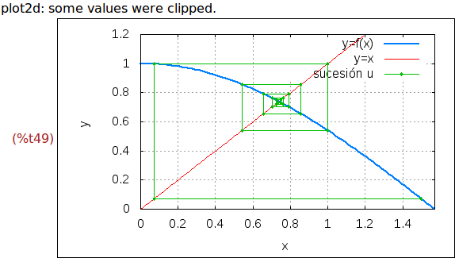
Fin.